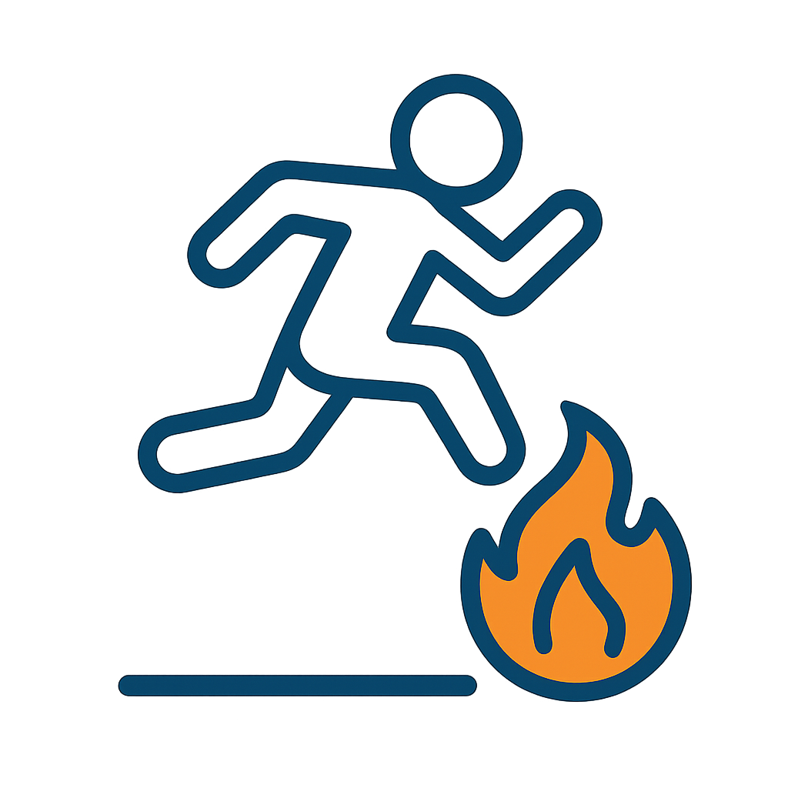
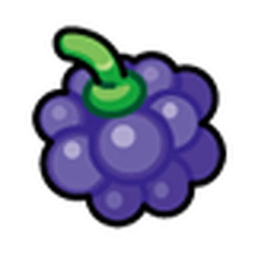
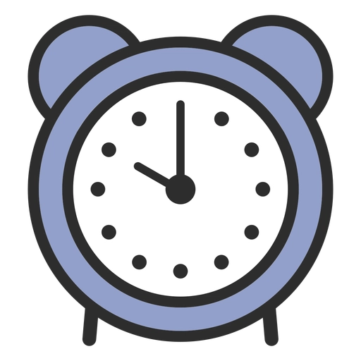

Sobre Nós(Gustavo Vieck)
Pokémon foi uma franquia muito presente na minha infância, tanto os jogos quanto os animes.
Querendo reviver a nostalgia de Pokémon, nós a Vieckemon criamos um jogo simples e divertido chamado PokeRun, para que nossos jogadores consigam ter a experiência única desse universo gigantesco e único.
Como Jogar
1. Inicie o Jogo
Clique em Jogar na tela inicial, logo após clique em Começar para começar o jogo.

2. Pule as Bolas de Fogo
Pressione a tecla Espaço para pular e evitar o fogo.
3. Pegue as Berries
Coletando as berries durante o jogo você acumula pontos, tendo uma melhor pontuação.
4. Sobreviva 30 Segundos
Evite os todas as bolas de fogo até o tempo acabar e capture o Charizard!
